| 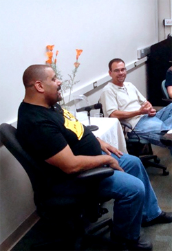 |
| 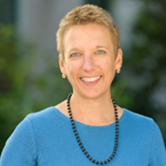 | 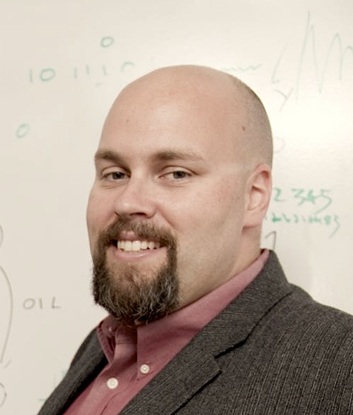 | 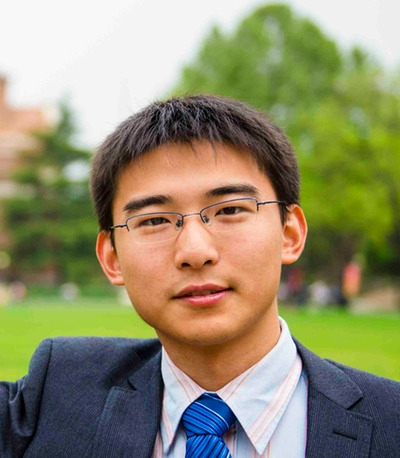 | 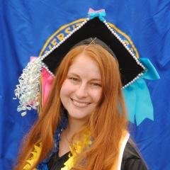 |
| Chandra Krintz | Tim Sherwood | Bolun Wang | Emilie Barnard |
Learn about the panelists here!
This event is part of:
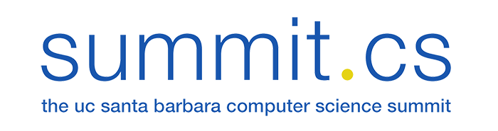Come hear advice from and mingle with UCSB CS Alumni to discuss undergraduate, graduate, and post-UCSB life!
| 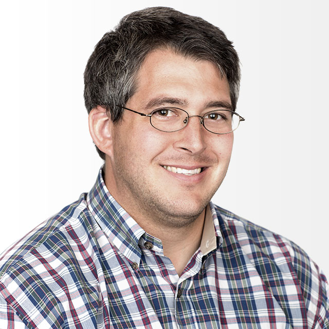 | 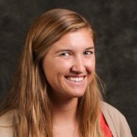 | 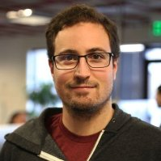 | |
| Scott Herriman-Invoca | Christina Morris-Goodreads | Carina Rammelkamp-Workday | Micheal Rosengarten-Persista |
Learn about our panelists at the Array of Talks Facebook
This event is part of:
Come hear advice from and mingle with UCSB CS Alumni to discuss undergraduate, graduate, and post-UCSB life!
| 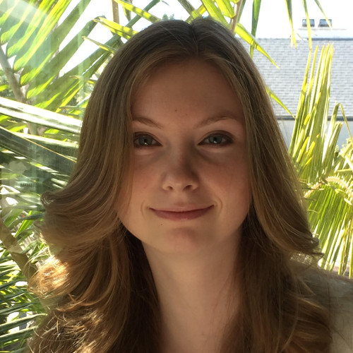 | 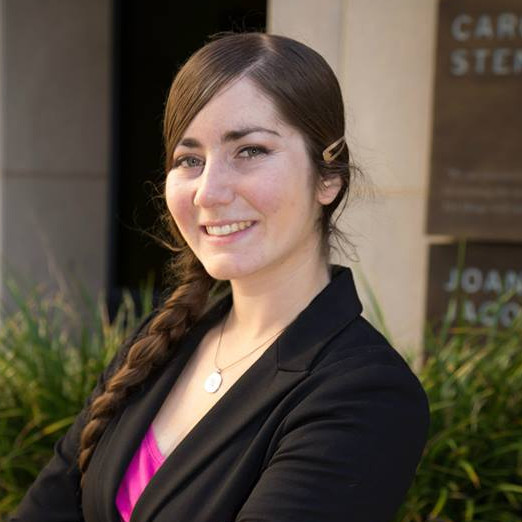 | 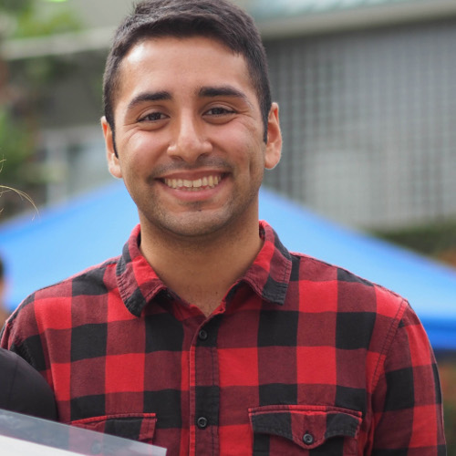 | 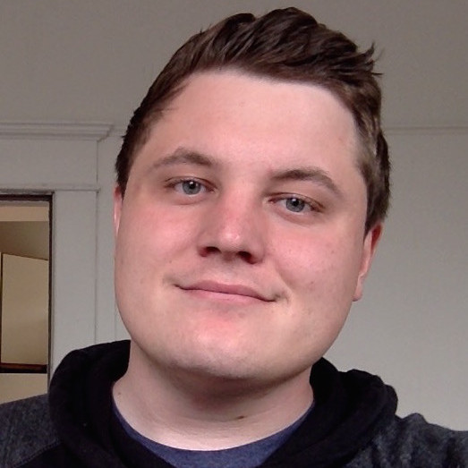 |
| Alex Allen, Illumna | Sarah Feldman, Tesla | Christian Rivera, Procore | Jared Roesch, PhD student at UW |
Learn about our panelists at the Array of Talks Facebook Page or read all their bios here
Hear from the author of
"Iron Clad Java:
Building Secure Web
Applications".
Free pizza and prizes!
The best time to address secure software is before most developers even start writing code. Months—sometimes years—before most developers even start writing code, various open source or corporate developers work together to build software frameworks—the platforms that other developers leverage to build applications.
The decisions made by framework designers ripple though time and have a large impact on the security posture of software that is built upon these frameworks.
Bio: Jim Manico is the founder of Manicode Security where he trains software developers on secure coding and security engineering. He is also the founder of Brakeman Security, Inc. and is a investor/advisor for Signal Sciences. Jim is a frequent speaker on secure software practices and is a member of the JavaOne rockstar speaker community. Jim is also a Global Board Member for the OWASP foundation where he helps drive the strategic vision for the organization. He is co-author (with August Detlefson) of Iron-Clad Java: Building Secure Web Applications from McGraw-Hill. For more information, see Jim Manico's LinkedIn Profile.
RSVP
and invite friends
at our Facebook Event
Learn about our events at the Array of Talks Facebook Page
Come hear advice from and mingle with UCSB CS Alums to discuss undergraduate, graduate, and post-UCSB life! Free pizza and prizes!
RSVP
and invite friends
at our Facebook Event
| 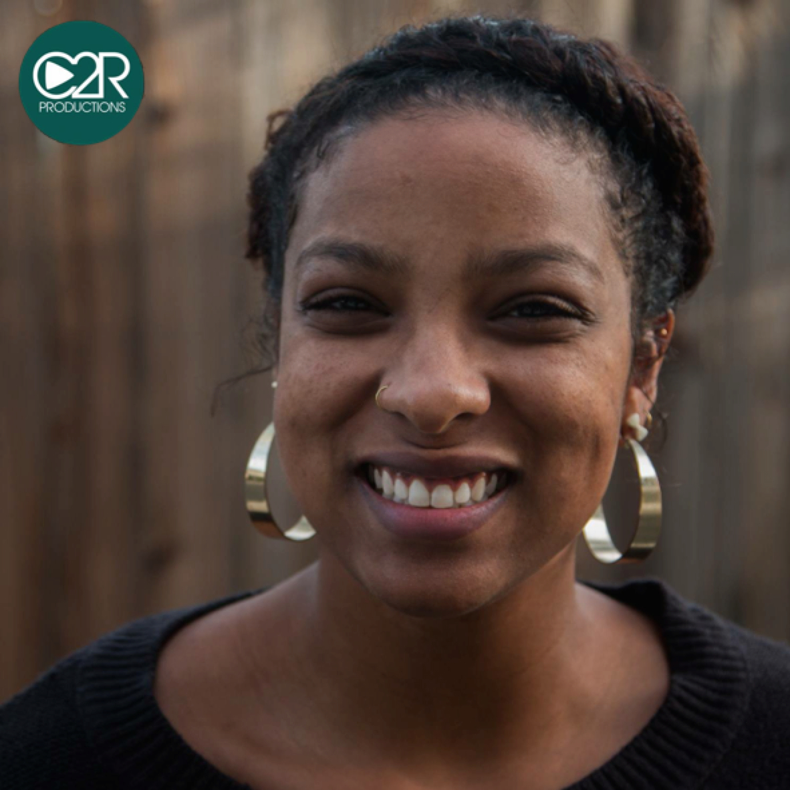 | 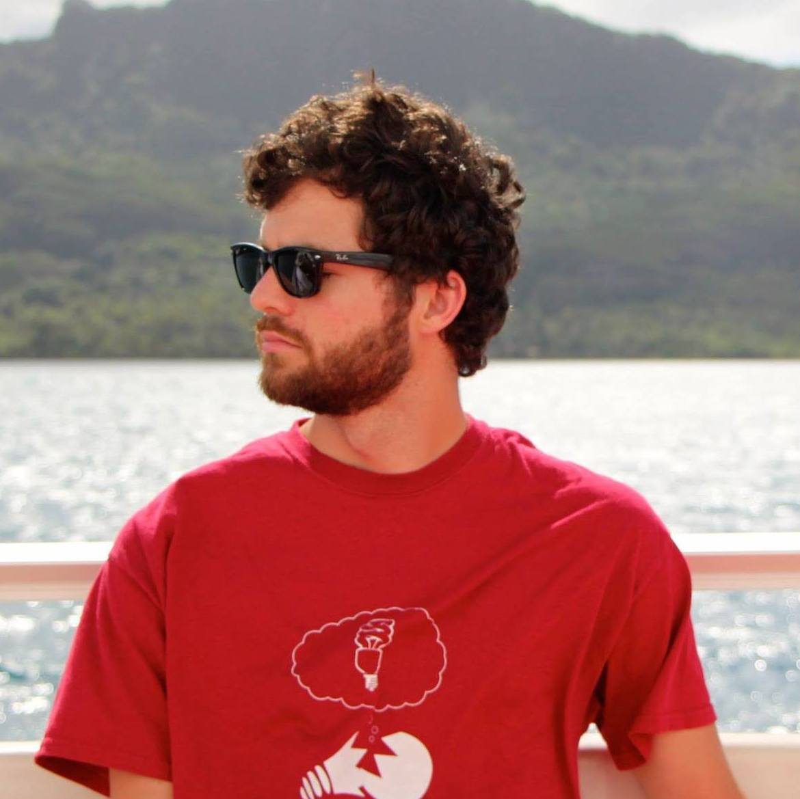 | 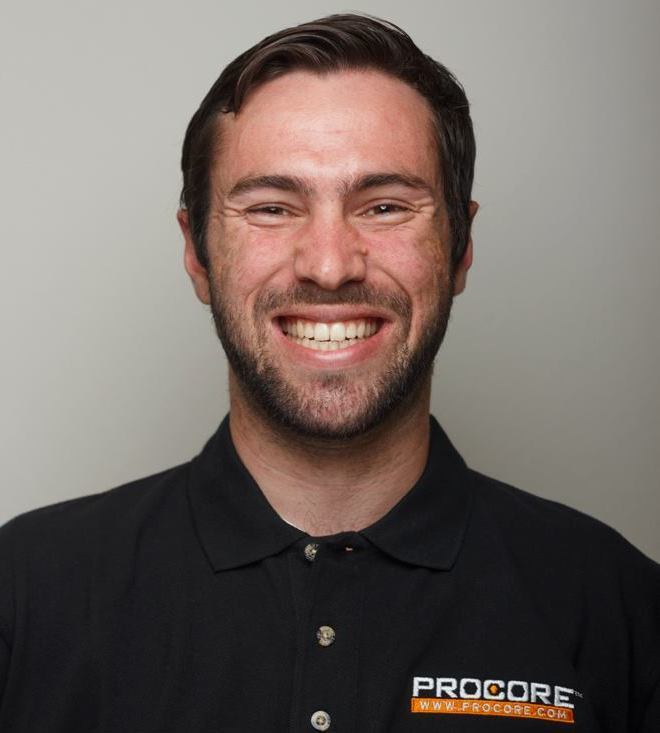 |
| Aisha Browne, BeyondTrust UCSB BS CS 2013 |
Leif Dreizler, Redspin UCSB BS CS CS 2013 |
Michael Hinrichs, Procore UCSB BA Geography 2012 |
| 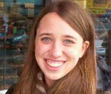 | 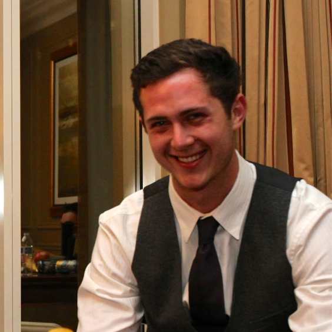 | |
| Sarah Jones, AppFolio UCSB BS CS 2012 MS CS 2013 |
Pablo Ortiz, MIT PhD Candidate in CS UCSB BS CS 2011 MIT MS CS 2013 |
Justin Rushing, Apple UCSB BS CS 2013 |
Learn about our panelists at the Array of Talks Facebook Page
Maria
Klawe
President, Harvey
Mudd
College.
Member,
Board of Directors, Microsoft Corporation.
| 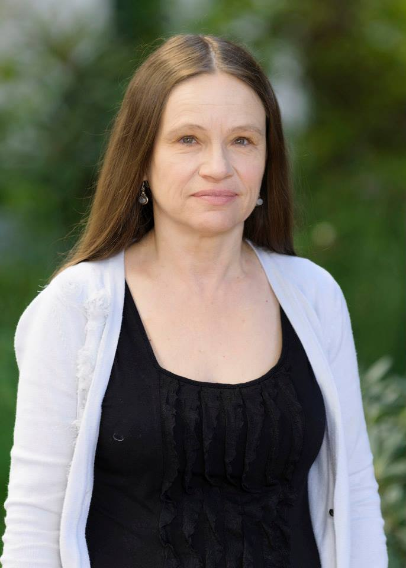 | 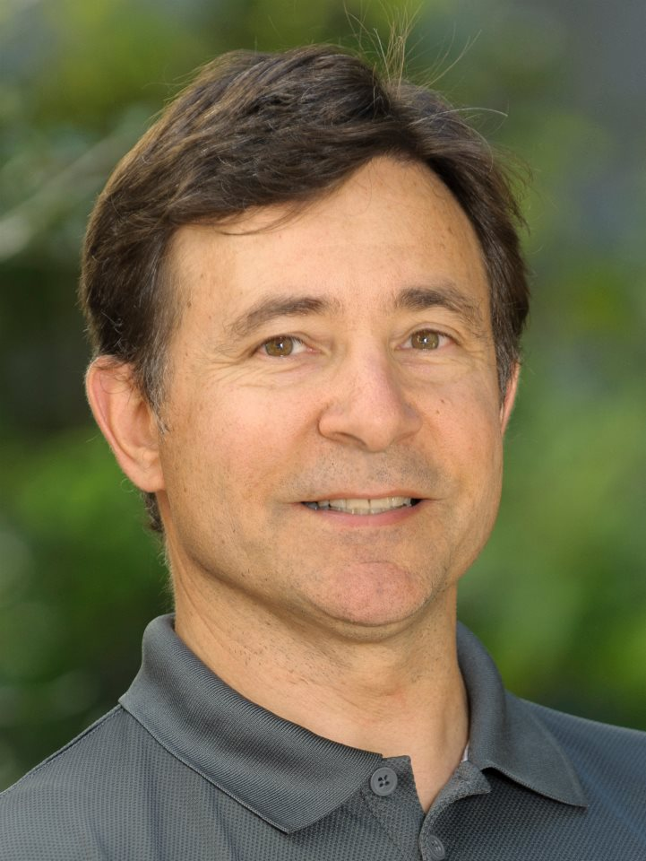 | 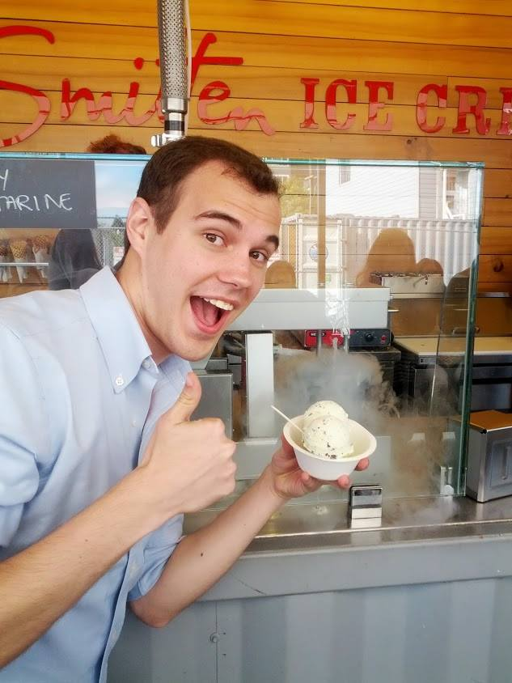 | 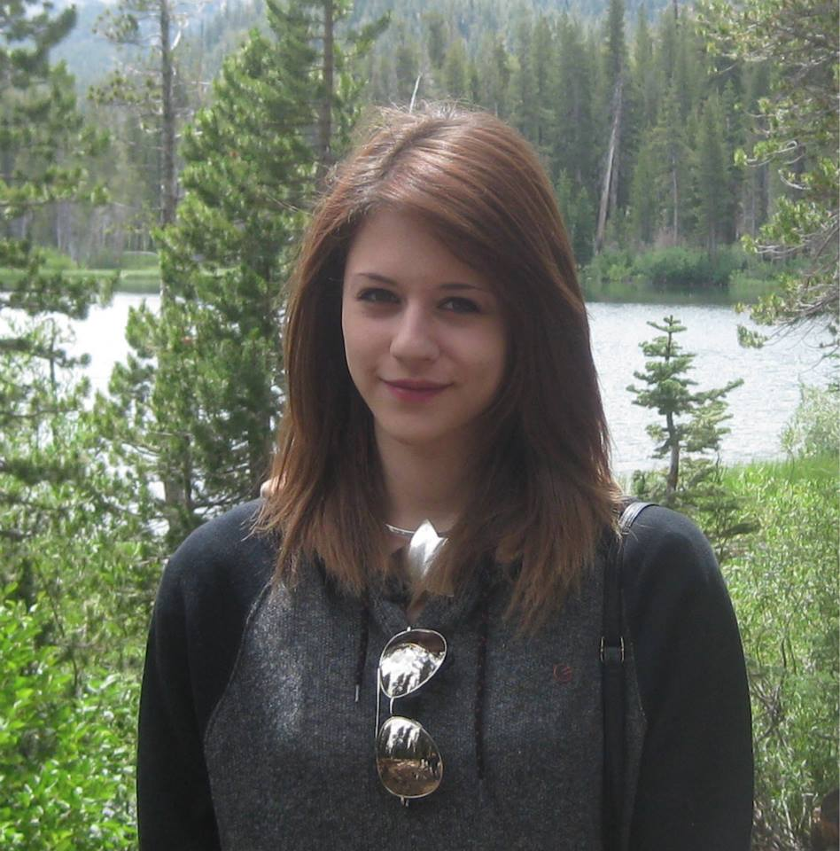 |
| Linda
Petzold Professor, UCSB CS Dept & UCSB ME Dept. |
Matthew
Turk Professor, UCSB CS Dept. & MAT Program |
Charles Munger Software Engineer, Google. UCSB CS alum |
Nina Kaufman UCSB 3rd year CS major, Intern, Procore |
Maria Klawe is a President of a prestigious college, on the board of directors of a major corporation (#35 of Fortune 500), and was previously Dean of Engineering at an Ivy League school. These are only a few of her impressive accomplishments.
Yet she, like each of us, has moments when she wonders whether she "belongs". Even highly accomplished people sometimes doubt their own abilities. This is known as Impostor Syndrome. Stereotypes can play a significant role, but Impostor Syndrome can affect anyone.
Hear from Dr. Klawe, two UCSB senior faculty, a recent UCSB alum and a current CS Undergraduate about their experiences with Impostor Syndrome, and how to overcome it. There will be brief panel presentations, and an opportunity for Q and A.
Refreshments will be served.
Featuring a presentation by Elizabeth Belding and the MOMENT Lab
In the United States and other Western countries, digital communication is instantaneous and ubiquitous. However, this is not the case for many parts of the world, especially in rural Africa. Come find out how UCSB students and faculty work to bring modern and fast digital communication via wireless networks to Zambia with Prof. Belding's VillageNet architecture.
Featuring a presentation by Professor Giovanni Vigna and a faculty panel.
Come find out why The Santa Barbara Independent called UCSB's Computer Security Group (Seclab) "just the hackers you need" and how they are "fighting the biggest crime wave in human history"!
Free pizza will be provided!
Image Credit: Paul Wellman, Santa Barbara Independent.
Kimberly Voll will speak about the Computer Game Industry, and Game Development in Computer Science Education.
Kim holds a PhD in computer science, and an honours degree in cognitive science. A professor of software engineering, game design and health informatics at the Centre for Digital Media in Vancouver, BC, her areas of specialization include artificial intelligence, language modelling, user experience, game design, software engineering, and innovative educational methods. Passionate about video games since the age of two, Kim runs the Vancouver chapter of the Global Game Jam (one of the largest chapters in the world), helps coordinate FullIndie (a meetup for Vancouver independent game developers), and is a huge supporter of the Vancouver video-game community and beyond. Whenever possible, Kim does volunteer consulting for new startups or small companies, including crowdsourced funding strategies and design/development strategies for games and apps. On the side, Kim is a 2D concept artist, an occasional graphic designer, a writer, and a game developer.
Come join esteemed personnel from local technology startups in a panel-style discussion. Both professional and student panelists will discuss their experiences working for and creating startup companies. If you have any questions about the startup experience, bring them with you and get valuable insight into the world of technology startups!
This is a special demonstration of the UCSB AlloSphere to
Computer Science Undergraduates. Prof. JoAnn Kuchera-Morin, director
of the AlloSphere research
facility will welcome you to this 30-foot diameter capsule built
inside a 3-story near-to-anechoic (echo free) cube and demonstrate
its capabilities of synthesis, manipulation, exploration and
analysis of large-scale data sets. This environment can simulate
virtually real sensorial perception.
We will also have presentations and
demonstrations by the research labs directed
by the following Professors, all working
in the general area of interactive graphics
and media:
What drives inventions in computing? Necessity seems to play only a minor role. Anger at the way things are is much more powerful, because it leads to easier ways to work (e.g. the invention of new computer languages). A general dissatisfaction with the practical or theoretical structure of the world can open up whole new approaches to problems (complexity theory and cryptography). Finally, a genuine collaboration between people and machines can lead to an entirely new kind of engineering for devices that will travel to far-off planets or to hostile environments.
The talk will discuss the work of several inventors in computing and engineering, their inventions, and how they came up with them and how they plan to come up with more in the future. The ensuing discussion will address the fundamental nature of invention in a world partly populated by intelligent machines.
Bio:
Dennis Shasha is a professor of computer science at the Courant Institute of New York University
where he works with biologists on pattern discovery for microarrays, combinatorial design, network
inference, and protein docking; with physicists, musicians, and financial people on algorithms for time
series; and on database applications in untrusted environments. Other areas of interest include database
tuning as well as tree and graph matching. Because he likes to type, he has written six books of puzzles
about a mathematical detective, a biography about great computer scientists, and technical books about
database tuning, biological pattern recognition, time series, and statistics. He has co-authored over sixty
journal papers, seventy conference papers, and fifteen patents. He has written the puzzle column for various
publications including Scientific American. He is co-author of Natural Computing.
bash with Brian FoxHow can releasing free software and making money go hand in hand? Brian Fox will discuss the advantages and disadvantages of leveraging free software using his extensive experience in the free software movement and the start-up world.
Brian has over 30 years of technology and business experience. In 2004, Brian founded The Okori Group, a consulting firm specializing in helping companies go from product concept to product realization. Prior to the Okori Group, Brian co-founded and led the technology team in a number of successful startup companies, In his career as a consultant he has completed a variety of high profile projects, including the world's first Internet banking system for Wells Fargo in 1995. In 1985 Fox was the first employee of the Free Software Foundation (Project GNU) where he worked with Richard Stallman. During his tenure at the FSF, Fox authored the BASH shell, widely used in all modern version of *NIX, GNU Makeinfo, GNU Info, GNU Finger, and the readline and history libraries, as well as contributing significantly to GDB and Emacs.
Today it would be difficult to find a medical device that does not critically rely on computer software in its function, manufacture, or use in clinical decision making. Despite the lessons learned by the radiation accidents of the Therac-25 twenty years ago, medical devices that rely on software (e.g., drug infusion pumps, linear accelerators for radiation) continue to injure or kill patients in preventable ways.
Kevin Fu is an assistant professor in the Department of Computer Science at the University of Massachusetts Amherst. Kevin's research has led to improvements in security and privacy of pervasive devices, promoting the vision of safer and more effective technology for consumers. Kevin received his Ph.D. in Electrical Engineering and Computer Science at the Massachusetts Institute of Technology. He has served on numerous program committees of leading conferences in computer security, and has given dozens of invited talks world-wide to industry, government, and academia on the topic of security and privacy. Kevin is an Alfred P. Sloan Research Fellow, NSF CAREER Award recipient, and MIT Technology Review TR35 Innovator of the Year. He also holds a certificate of achievement in artisanal bread making from the French Culinary Institute.
Kent Demaine is the CEO of OOOii, a very successful visual effects studio that creates the futuristic interfaces you see in movies like Minority Report and Star Trek. Kent will be discussing what goes into creating those interfaces and the computer science that is used every day to make movie magic. Kent has a B.S. from the University of Virginia in Computer Science / Engineering.
To inspire enthusiasm for Computer Science, intellectual exchange, and a sense of community among CS undergraduates, faculty, and professionals.
We would like to thank an anonymous donor for providing the funds to make this series of talks possible. We would also like to thank the faculty, staff and especially the undergraduate members of the UCSB CS department Undergraduate Affairs Committee for their work in organizing this series. Finally, thanks goes out to the entire CS Department for its support.
If you would like to suggest speakers, get involved in the planning of these talks, and/or have comments and criticisms, you can reach us at arrayoftalks@cs.ucsb.edu. You can also reach us on our Facebook page.